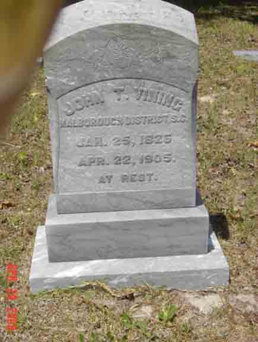
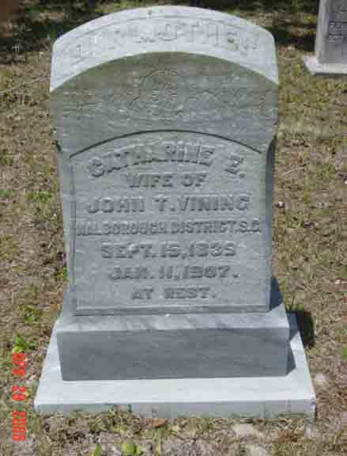

Census Data
| 1860 | 1870 | 1880 | 1890 | 1900 | 1910 | |
| John Thomas Vining | ? | ? | 54 | ? | ? | ? |
| Catherine Elizabeth (Townsend) Vining | ? | ? | [48?] | ? | ? | ? |
| Darius Townsend Vining | ? | ? | 23 | married [and living in separate household?] | ||
| Sumter Vining | ? | 17 | ? | ? | ? | |
| Allen Vining | ? | 15 | ? | ? | ? | |
| Lawrence Vining | ? | 13 | ? | ? | ? | |
| Edward Sumner Vining | ? | 11 | ? | married and living in separate household | ||
| William David Vining | 8 | ? | ? | ? | ||
| Margaret Vining | 4 | ? | ? | ? | ||
| Frances W. Vining | 1 | ? | ? | ? | ||
| Adrian A. Vining | ? | ? | ? |

Death Data
Gravestones for John Thomas Vining and Catherine Elizabeth (Townsend) Vining, in Oak Grove Cemetery, Wildwood, Sumter County, Florida (from Find A Grave):
